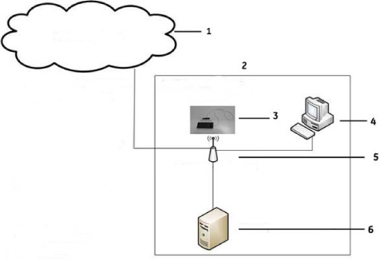

|
Contents ‘Privacy and Security Environment Requirements’ |
This chapter describes Privacy and Security considerations for the use of the Vscan Extend. It describes the expected intended use, the Privacy and Security capabilities included, and how they are configured and used appropriately. This chapter assumes that the reader understands the concepts of Privacy and Security. Privacy is the property of protecting the personal private interests of patients. Security protects both system and information from risks to confidentiality, integrity, and availability. Security protects Privacy but also protects more broadly against these risks. Privacy requires security. In Healthcare one must balance privacy, security, and safety. Most of the time there isn’t a conflict between these three domains of risk. The healthcare provider organization is encouraged to use risk management procedures to assess and prioritize privacy, security, and safety risks. Through the use of risk management one can determine how to best leverage the capabilities provided in the Vscan Extend Ultrasound product. |
For privacy and security concerns regarding GE products, please see: http://www.ge.com/security |
The GE Healthcare Vscan Extend Ultrasound product has been designed for an intended use with the following expectations of Privacy and Security protections included in the environment where this product will be used: 1. The system should be connected to a secured network, not open to unintended users. 2. The Vscan Extend should be physically secured in a way that it is not accessible for unintended users. 3. External media (microSD card) containing images, patient data, reports and logs should be secured. When no longer used, the data should be securely erased and/or the media should be securely deleted. 4. The display of the Vscan Extend should be placed in a way limiting the visibility to the user only. GE Healthcare will not incur liability if patient privacy was disclosed or any other harmful consequence will happen in result of unauthorized access to these systems. |
The GE Healthcare Vscan Extend incorporates a broad assortment of capabilities to enable Privacy and Security. This section describes the capability and use of these Privacy and Security capabilities. |
The access control features may be used to help control access to sensitive information. Access control includes user account creation and assigning privileges. |
The Vscan Extend device supports PIN authentication. A PIN is created by the user when accessing the device and storing the image for the first time. The device provides PIN access at two levels: 1. Storage access 2. Admin access The user MUST set the Admin PIN when trying to access the Admin mode. |
The restrictions on a PIN are: 1. The PIN should be 4-digits long. 2. When the device is idle for a certain amount of time set in the session duration, it is the reponsibility of the user to ensure that the device is not used by unauthorized individuals as it may lead to data loss. |
The Vscan Extend device is operated using a PIN. Only one PIN is used by different users to access the device. The Vscan Extend does not support user profiles. |
The Admin mode is used to change the System level configuration. A user can access the Admin mode by entering the Admin PIN. |
Patient Privacy Consent Management is the process to support the patient to express their privacy requirements. This is different from other forms of consent such as the consent to treat. There is no integrated functionality in the system for Patient Privacy Consent Management. If needed, operational routines must be established. |
Privacy and Security Audit Logging and Accountability Controls support Security surveillance and Privacy investigations and reporting. The Vscan Extend has an integrated functionality for audit logging, including audit logging of privacy related events. |
The following events are captured by the audit logging of the Vscan Extend: 1. Device Start/Shut-down time 2. Incorrect password attempts 3. Addition and Modifications to system configuration, including: a. DICOM connection b. Windows Share connection c. Application software installation/uninstallation/software upgrade d. Registration of partnering apps 4. Events related to Patient Data, including details of: e. Data access Date/Time including type of action (addition, deletion, modification, reviewed) excluding the PC connect scenario f. Details of applications used (Bladder app, Lung protocol, etc.) 5. Data Export a. Data export Date/Time including end point and Wi-Fi SSID information b. Data Backup/Restore detail 6. Invalid Device PIN attempt 7. Kiosk admin mode login success and failure |
Back up of audit logs can be done by exporting audit logs to an external device. The export happens through USB export. Remember that audit logs and exported audit log files do contain Personal Information (PI) and must be handled according to applicable regulations and guidelines for handling of PI/PHI. Note that exported audit log files are stored unencrypted. |
Network connection for the Vscan Extend is required by several system features: 1. DICOM connectivity to other DICOM devices 2. Disk Management/Backup towards Windows share 3. Image/Video storage via the “JPG/MPEG” feature |
The figure below shows the possible interconnections for the Vscan Extend Ultrasound system. For a particular installation, typically a subset of the interconnections is utilized.  Figure 8-1. Vscan Extend network diagram |
1. GE Marketplace/Tricefy 2. Hospital Clinical Network 3. Vscan Extend Device |
4. PACS 5. Hospital Clinical Wireless infrastructure 6. Windows PC |
|
• Supported Wireless Protocols include WPA2 with PSK and EAP with certificates • Log files • Data backup/restore • Software upgrade Wireless Networks are configured by Hospital IT administrators or device owners. The Wi-Fi encryption depends upon on the hospital IT infrastructure and the device enterprise grade protocols with the certificate mechanism. DICOM image transfer and anonymized images/video transfer to a Windows machine is supported via hospital clinical wireless network. GE Marketplace/Tricefy is supported via non-clinical Wireless Network (which has access to internet) over SSL/TLS. The table below describes interconnections in more detail: |
Table 8-1: Interconnections
Source/destination |
Network service |
Description |
|---|---|---|
PACS/DICOM server |
DICOM |
Optional connection to PACS/DICOM server for patient and image archiving/retrieval. DICOM storage, DICOM Query/Retrieve and DICOM Worklist are supported |
Windows share |
Windows file sharing |
Some dataflows can be configured to use a windows share as output. This includes MPEG, videos. |
USB export |
USB cable |
If the feature is enabled, an USB cable can be connected to a PC for exporting images and videos. |
For details regarding protocols, port numbers and firewall configurations see ‘Inbound firewall configuration’ on page 8-10, ‘Outbound firewall configuration’ on page 8-11. |
1. TCP/IP network 2. Both DHCP and static IP allocation are supported |
The following wireless protocols are supported (only 2.4 GHz): 1. IEEE 802.11b 2. IEEE 802.11g 3. IEEE 802.11n |
1. IPv4 2. IPv6 |
This section of the manual focuses on Privacy and Security operations, and contains information to guide in the preparation of a secure environment for the Vscan Extend Ultrasound system. Security operations is best implemented as part of an overall “defense in depth” information assurance strategy; this is used throughout an Information Technology system that addresses personnel, physical security and technology. The layered approach of defense in depth limits the risk that the failure of a single security safeguard will allow compromise of the system. |
GE strongly recommends that medical information systems are operated in a secure network environment that is protected from unauthorized intrusion. There are many effective techniques for isolating and protecting medical information systems, including implementing firewall protection, demilitarized zones (DMZs), Virtual Local Area Networks (VLANs) and network enclaves. To assist in secure network design, the following network profile outlines the required network services for the Vscan Extend Ultrasound system. The Vscan Extend is supported with an internal firewall. The following two sections describe the configuration of the firewall and the guidance for configuring the IT infrastructure where it is connected. |
All inbound connections are blocked by the Vscan Extend Ultrasound system’s internal firewall, with the exemptions listed in the table below. The column “Recommended configuration of network infrastructure” describes the suggested configuration of the network infrastructure regarding the different network services. |
Table 8-2: Inbound Firewall configuration
Local port |
Remote port |
Protocol |
Programs |
Recommended configuration of network infrastructure |
Network service |
|---|---|---|---|---|---|
1041 |
Any |
TCP |
All |
Open to DICOM server(s) connected to the Vscan Extend, but only if DICOM Retrieve is used. Closed towards internet. |
DICOM Retrieve from connected DICOM server(s) |
1 Port 104 or another port configured for the DICOM Retrieve service. |
|||||
All outbound connections are blocked by the Vscan Extend Ultrasound system’s internal firewall, with the exemptions listed in the table below. The column “Recommended configuration of network infrastructure” describes the suggested configuration of the network infrastructure regarding the different network services. |
Table 8-3: Outbound Firewall configuration
Local port |
Remote port |
Protocol |
Programs |
Recommended configuration of network infrastructure |
Network service |
|---|---|---|---|---|---|
Any |
1042 |
TCP |
DICOM |
Open to DICOM server(s) connected to the Vscan Extend. Closed towards internet. |
DICOM |
Any |
1043 |
TCP |
DICOM |
Open to DICOM server(s) connected to the Vscan Extend, but only if DICOM Query is used. Closed towards internet. |
DICOM |
Any |
1044 |
TCP |
DICOM |
Open to DICOM server(s) connected to the Vscan Extend, but only if DICOM Worklist is used. Closed towards internet. |
DICOM |
Any |
445 |
TCP |
Windows Share |
Windows |
Windows |
2 Port 104 or another port configured for the DICOM Storage service. 3 Port 104 or another port configured for the DICOM Query service. 4 Port 104 or another port configured for the DICOM Worklist service. |
|||||
The Vscan Extend is provided with an internal archive, for storing images and patient data locally on the system. The local archives file repository and patient database do not support file sharing or remote connection. These can only be accessed locally. The patient database is protected with the authentication for access requirements and no possibility of remote access. |
The DICOM connection works as defined by DICOM guidelines. The application accepts connection only to/from DICOM entities with IP-address, AE Title and port number matching the configured parameters in the Vscan Extend Ultrasound system. The communication sessions are on demand and are always initiated locally from the system. The Vscan Extend Ultrasound system’s internal firewall has exemptions for ports used by the defined DICOM dataflows in the system. Defining a new DICOM dataflow, or changing an existing dataflow, will cause the internal firewall configuration to automatically change. This ensures that only ports configured for a dataflow have an exemption in the internal firewall. |
Windows share access can be secured by defining a dedicated user on the server side. The user credentials for the network share user must be entered in the configuration UI on the Vscan Extend Ultrasound system. |
NOTE: |
There is no network file share on the Vscan Extend Ultrasound system. |
The infrastructure of the network where the Vscan Extend is connected must be configured to allow traffic as described in Inbound firewall configuration and Outbound firewall configuration sections. All other traffic to and from the Vscan Extend can be blocked in the network infrastructure to prevent unintended access. |
Due to the broadcast nature of wireless communication, wireless devices require special security considerations. There are effective techniques and tools for improving the security of wireless communication devices. |
The following security protocols are supported on the wireless interface: 1. WPA/WPA2 PSK 2. 802.1x EAP - (PEAP, TLS, TTLS, PWD, SIM, AKA) |
Data stored on removable media, such as a microSD card, is stored encrypted on the media. The storage device and the content on the storage device must be physically protected and handled according to applicable regulations and guidelines for handling personal information (PI) / protected health information (PHI). Data can also be exported through a USB cable to a PC. Only the images or videos will be exported. The patient information will not be displayed. |
The Vscan Extend supports USB cable connection to export images and videos to a PC. The removable microSD cards are used for the following: 1. Backup encrypted patient data – empty microSD card 2. Error log storage – original microSD card delivered with the Vscan Extend 3. Upgrade the application software – Application microSD card |
The Vscan Extend does not have the internal functionality to securely delete data stored on the removable devices. Approved procedures and tools should be used to securely remove data stored on removable media, according to applicable regulations and guidelines for handling patient information / personal information (PI) / protected health information (PHI). |
Patient data is encrypted and images/videos/logs are unencrypted. |
The Vscan Extend backup feature stores data in an encrypted format. Only images are backed up; no patient information is displayed. The backup device must be secure, whether it is removable media or a server, to ensure no unauthorized intrusion. |
The Vscan Extend supports interconnections to external storage systems. This includes connections to Remote Archives (Windows Share) and DICOM servers. The security of data stored on the interconnected system must be secured on the external storage system (outside the scope of the Vscan Extend). |
The Vscan Extend has integrated audit log capabilities that logs changes to the data. See ‘Privacy and Security Audit Logging and Accountability Controls’ on page 8-4 for more information. |
To ensure business continuity, several options must be considered related to data storage. The target for the images and patient archive must be chosen to ensure safe storage of the data. Both internal and external alternatives are supported. |
The Vscan Extend supports several alternatives for storing images and patient information, both internal and external: 1. Local Archive: local storage on the Vscan Extend Ultrasound system 2. Remote Archive: Only anonymized images can be stored on Windows share. Patient information is not visible. 3. DICOM storage: storage on DICOM/PACS server See ‘System interconnections’ on page 8-6 for more information. |
If local archive is used, backup and/or transfer procedures must be established for the local archive. If disk management is not performed within a pre-defined period, a warning message displays. |
If external archive is used, a backup procedure must be established for the external archive. The business contingency planning of data stored on DICOM/PACS servers is outside the scope of this document. |
The Vscan Extend can operate in stand-alone mode, with the use of Local Archive. If there are data network related problems, which prevents the Vscan Extend from connecting to an external patient archive, the device can be fully functional by storing patient data/images to the Local Archive. |
The System needs to be configured and maintained in a way that continually protects Privacy and Security. The GE Healthcare Vscan Extend contains additional features to improve local operational security. |
Users of the Vscan Extend do not have access to the Android system nor to the MST system (Linux) on the Vscan Extend Ultrasound system. Hence the users will have no access to internet web-browsing, e-mail clients, installing any software on the system nor adding files (except for application related files through the application) |
Android operating system is controlled through an Admin PIN. The user does not have access to the Android system. |
Table 8-4: Operating system
Family |
Product |
Vscan Extend |
DaVinci 6446 / 128MB / 64MB; Android 5.1/ 3.0 GB |
The Vscan Extend is based on Android and Linux operating systems, but have been customized for Ultrasound use. |
The Vscan Extend collects patient demographic information, personal and/or protected health information for the use within the system. Information entered for users defined in application user management is also stored on the system. The following types of information are collected for the purposes of patient medical diagnosis, user management, audit logging and/or debug logging: 1. Patient demographics 2. Medical diagnostics and measurements 3. Ultrasound images 4. Facility information 5. Provider information 6. Device data Patient information collected is either entered manually by the user or is received through one or more of the system’s dataflows. Details on what data is collected, used and disclosed can be obtained by contacting GE Healthcare. |
Only PI required for the purpose of treatment or healthcare operations should be collected. Even though the Vscan Extend supports PI collection for treatment or healthcare operations, the system might support collection of more data than is needed for a particular installation. Limit the PI collection to the content needed. The user should not enter personal identifiable information in free text fields on the system as this information is not anonymized by the de-identification procedure. |
If the Vscan Extend is connected to external archives, patient demographics, medical diagnostics, measurements and ultrasound images will be communicated to/from the external archives. The same applies for remote network shares and external media, like a microSD card and USB cable used to export images to a PC. See ‘System interconnections’ on page 8-6 for more information. |
The information collected is stored on the system until it is manually removed. Requirements and policies for limited collection and/or destruction of Patient Information on the system must be implemented by establishing appropriate procedures. There is no support for such functionality in the system. |
User information created and managed on the device remains on the system until manually removed. Requirements and policies for limited collection and/or destruction of user information on the system must be implemented by establishing appropriate procedures. |
Some users of Vscan Extend system might face requirements and policies for letting individuals (the patients) authorize the collection, use and disclosure of PI/PHI. Such requirements can only be implemented by operational procedures. |
Some users of the Vscan Extend may have certain requirements and policies to inform individuals (patients) about the collection, use and disclosure of PI/PHI. Such requirements can only be implemented by procedures. |
The following situations have been identified as potentially hazardous as a result of the IT network failing to provide the required characteristics specified above. 1. Delayed or impaired access to images or other exam information or patient data. 2. Permanent loss of images or other exam information or patient data. 3. Corruption of images or other exam information or patient data. |
In addition to the hazardous situations identified above, connection of the Vscan Extend to a network that includes other equipment could result in other unidentified risks to patients, operators or third parties. The responsible organization should identify, analyze, evaluate and control these risks on an ongoing basis. Re-evaluate the risks if any of the following occurs: 1. Changes in network configuration 2. Connection of additional items to the network 3. Disconnecting items from the network 4. Update of equipment connected to the network 5. Upgrade of equipment connected to the network |